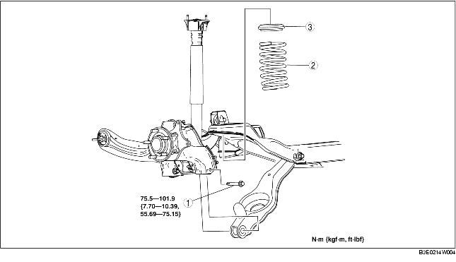

1. Remove the rear auto leveling sensor. (See AUTO LEVELING SENSOR REMOVAL/INSTALLATION.)
2. Remove the rear stabilizer. (See REAR STABILIZER REMOVAL/INSTALLATION.)
3. Remove in the order indicated in the table.
4. Install in the reverse order of removal.
5. Inspect the wheel alignment and adjust it if necessary.
(See REAR WHEEL ALIGNMENT.)

.
1. Support the rear lower arm using a jack.
2. Loosen the rear lower arm inner bolt.
3. Remove the rear lower arm outer bolt.
1. Position the jack under the rear lower arm and jack up slowly.
2. Align the upper end of the rear coil spring with the step of the upper spring seat rubber.
3. Align the lower end of the rear coil spring with the step of the lower spring seat rubber.
4. Install the lower arm outer bolt.